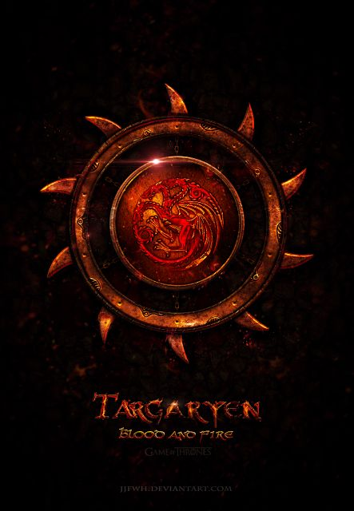
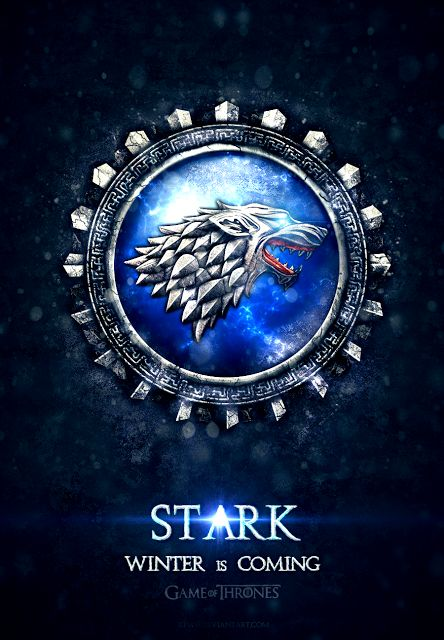
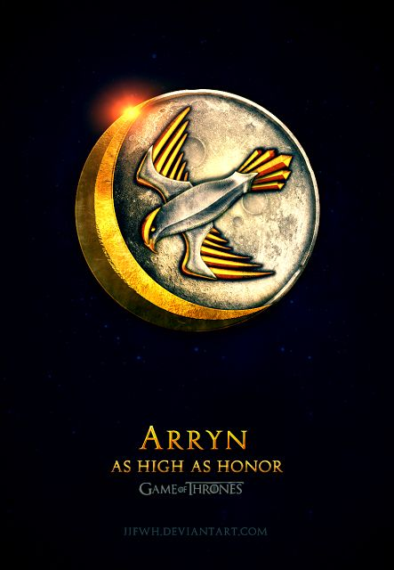
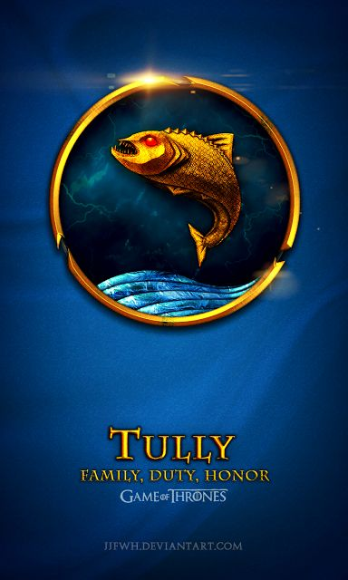
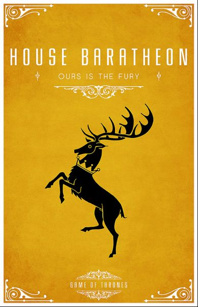
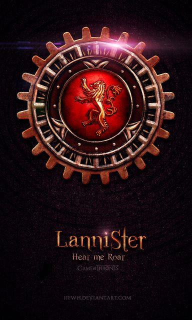
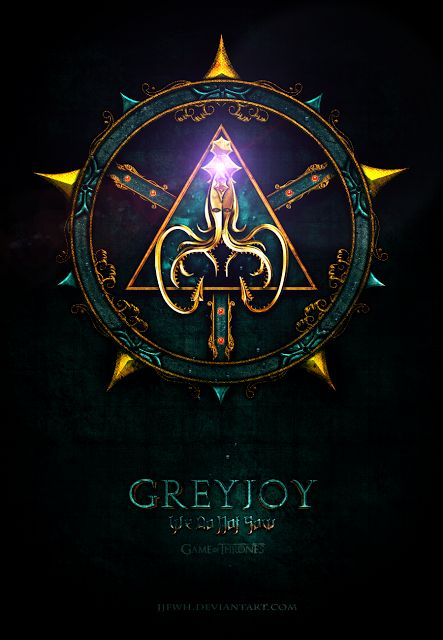
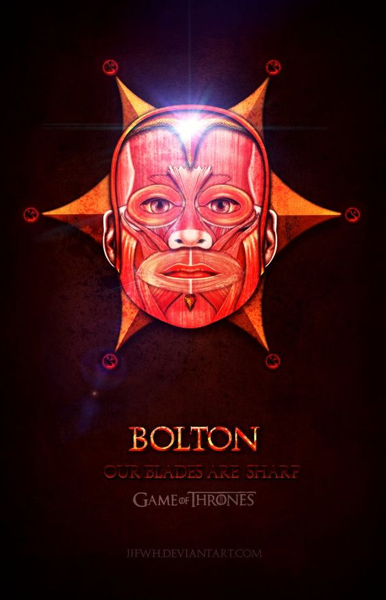
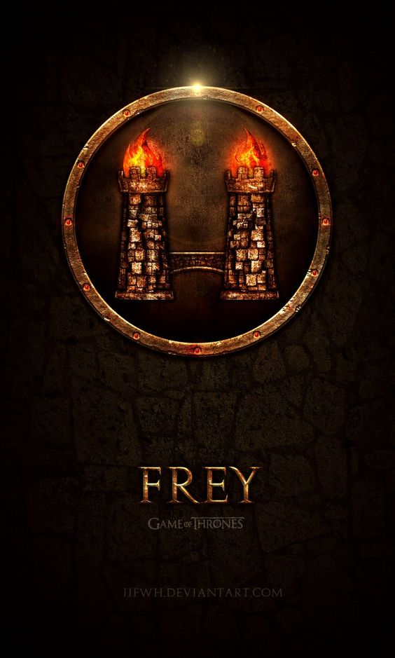

Game of Thrones is an American fantasy drama television series created by David Benioff and D. B. Weiss. It is an adaptation of A Song of Ice and Fire, George R. R. Martin's series of fantasy novels, the first of which is A Game of Thrones. It is filmed at Titanic Studios in Belfast, on location in the United Kingdom, and in Croatia, Iceland, Malta, Morocco, Spain, and the United States. The series premiered on HBO in the United States on April 17, 2011, and its sixth season ended on June 26, 2016. The series was renewed for a seventh season, scheduled to premiere in mid-2017 with seven episodes. The series will conclude with its eighth season in 2018. Set on the fictional continents of Westeros and Essos, it has several plot lines and a large ensemble cast. The first story arc follows a dynastic conflict among competing claimants for succession to the Iron Throne of the Seven Kingdoms, with other noble families fighting for independence from the throne. The second covers attempts to reclaim the throne by the exiled last scion of the realm's deposed ruling dynasty; the third chronicles the threat of the impending winter and the legendary creatures and fierce peoples of the North.
| The Houses of Westeros | ||
|---|---|---|
|  | ||
|  |  |  |
|  |  |  |
|  |  | |